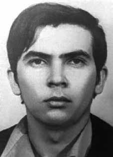

Bergson
Gurjão
Farias
CIRCUNSTÂNCIAS DA MORTE
O Relatório Arroyo descreve que, entre maio e meados de junho de 1972, Bergson Gurjão Farias estava acompanhado dos guerrilheiros Josias, Paulo Mendes Rodrigues, Aurea Eliza Pereira e Arildo Valadão indo buscar fumo com um camponês conhecido como Cearense, quando foram traídos por este.
Ângelo Arroyo narra que o grupo foi metralhado por soldados, e Bergson morreu nesse evento. A publicação “Documentos do SNI: Os mortos e Desaparecidos na Guerrilha do Araguaia” se refere a informações enviadas pelo Posto de Comando da Força Aérea Brasileira em Xambioá, via rádio, e registradas pelo CISA/DF, acerca do episódio em que morreu Bergson. O documento, de 7 de junho de 1972, informa que a presença dos guerrilheiros foi denunciada por um lavrador, em 5 de junho de 1972, na região de Cachimbeiras, e que, na ação, havia sido morto Bergson, enquanto Aurea e Josias haviam escapado.
O relatório também notifica a prisão de Dower Moraes Cavalcanti para interrogatório. O “Dossiê Ditadura” afirma que o combate teria ocorrido em 8 de maio de 1972 e que o corpo de Bergson teria sido levado a Xambioá e, posteriormente, pendurado em uma árvore, onde passou a ser alvo de chutes desferidos por paraquedistas envolvidos na perseguição à guerrilha. A morte do militante foi registrada em diversas fontes do poder repressivo e em depoimentos dos sobreviventes José Genoíno Neto e Dower Moraes Cavalcante.
Conforme o Relatório da CEMDP, Genoíno sustentou ter visto o corpo de Bergson sem vida e mutilado, enquanto Dower afirmou ter sido torturado junto ao guerrilheiro, que teria sido sepultado no Cemitério de Xambioá, de acordo com o general Bandeira de Melo. O relatório do Ministério da Marinha, encaminhado ao ministro da Justiça Maurício Corrêa em 1993, afirma que, em junho de 1972, Bergson “foi morto e tido como desaparecido, juntamente com outros presos políticos”. O Relatório do Ministério do Exército, entregue na mesma ocasião, se refere a uma publicação do jornal Última Hora de Brasília, de 11 de outubro de 1985, que traz depoimentos de ex-integrantes do movimento armado afirmando terem reconhecido Bergson morto.
Esse documento menciona também a fala da mulher do coveiro de Xambioá ao sobrevivente Dower Cavalcante – publicada no jornal Gazeta do Povo em 27 de abril de 1991 – de que Bergson estaria enterrado no cemitério da cidade junto a João Carlos Haas Sobrinho. Quanto aos demais registros da morte de Bergson, o livro da CEMDP cita também o Relatório da Operação Sucuri, de maio de 1974. Além disso, o “Dossiê Ditadura” alude à carta de instrução 01/72, da Operação Papagaio, assinada por Uriburu Lobo da Cruz, notificando a baixa entre os guerrilheiros – no dia 2 de junho de 1972, na região do Caianos.
Já o Relatório do CIE, Ministério do Exército, de 1975, afirma que Bergson morreu em 3 de junho de 1972, enquanto o Relatório da Manobra Araguaia, assinado pelo general Antonio Bandeira, especifica o dia 2 de junho de 1972, em Caiano.
The Arroyo Report describes that, between May and mid-June 1972, Bergson Gurjão Farias was accompanied by the guerrillas Josias, Paulo Mendes Rodrigues, Aurea Eliza Pereira and Arildo Valadão going to get tobacco from a peasant known as Cearense, when they were betrayed by him.
Ângelo Arroyo narrates that the group was machine-gunned by soldiers, and Bergson died in that event. The publication “SNI Documents: The Dead and Missing in the Araguaia Guerrilla” refers to information sent by the Brazilian Air Force Command Post in Xambioá, via radio, and recorded by CISA/DF, about the episode in which Bergson died. The document, dated June 7, 1972, states that the presence of the guerrillas was reported by a farmer, on June 5, 1972, in the Cachimbeiras region, and that, in the action, Bergson had been killed, while Aurea and Josias had escaped.
The report also notifies the arrest of Dower Moraes Cavalcanti for interrogation. The “Dictadura Dossier” states that the fight took place on May 8, 1972 and that Bergson’s body was taken to Xambioá and, later, hung from a tree, where he became the target of kicks from paratroopers involved in the pursuit of the guerrillas. The militant's death was recorded in several repressive power sources and in testimonies from survivors José Genoíno Neto and Dower Moraes Cavalcante.
According to the CEMDP Report, Genoíno claimed to have seen Bergson's lifeless and mutilated body, while Dower claimed to have been tortured alongside the guerrilla, who was reportedly buried in the Xambioá Cemetery, according to General Bandeira de Melo. The report from the Ministry of the Navy, sent to the Minister of Justice Maurício Corrêa in 1993, states that, in June 1972, Bergson “was killed and considered missing, along with other political prisoners”. The Report from the Ministry of the Army, delivered on the same occasion, refers to a publication in the newspaper Última Hora de Brasília, dated October 11, 1985, which contains testimonies from former members of the armed movement stating that they recognized Bergson as dead.
This document also mentions the speech made by the wife of the gravedigger of Xambioá to the survivor Dower Cavalcante – published in the newspaper Gazeta do Povo on April 27, 1991 – that Bergson was buried in the city's cemetery next to João Carlos Haas Sobrinho. As for the other records of Bergson's death, the CEMDP book also cites the Operation Sucuri Report, from May 1974. Furthermore, the “Dictadura Dossier” alludes to instruction letter 01/72, from Operation Papagaio, signed by Uriburu Lobo da Cruz, notifying the casualty among the guerrillas – on June 2, 1972, in the Caianos region.
The CIE Report, Ministry of the Army, from 1975, states that Bergson died on June 3, 1972, while the Araguaia Maneuver Report, signed by General Antonio Bandeira, specifies June 2, 1972, in Caiano.
El Informe Arroyo describe que, entre mayo y mediados de junio de 1972, Bergson Gurjão Farias estaba acompañado por los guerrilleros Josias, Paulo Mendes Rodrigues, Aurea Eliza Pereira y Arildo Valadão yendo a comprar tabaco a un campesino conocido como Cearense, cuando fueron traicionados por él.
Ângelo Arroyo narra que el grupo fue ametrallado por soldados, y Bergson murió en ese hecho. La publicación “Documentos del SNI: Muertos y desaparecidos en la guerrilla de Araguaia” hace referencia a informaciones enviadas por el Puesto de Comando de la Fuerza Aérea Brasileña en Xambioá, vía radio, y grabadas por CISA/DF, sobre el episodio en el que murió Bergson. El documento, fechado el 7 de junio de 1972, afirma que la presencia de los guerrilleros fue denunciada por un campesino, el 5 de junio de 1972, en la región de Cachimbeiras, y que, en la acción, Bergson había sido asesinado, mientras que Aurea y Josias habían escapado.
El informe también notifica la detención de Dower Moraes Cavalcanti para ser interrogado. El “Dossier Dictadura” refiere que la pelea se produjo el 8 de mayo de 1972 y que el cuerpo de Bergson fue trasladado a Xambioá y, posteriormente, colgado de un árbol, donde fue blanco de patadas de paracaidistas involucrados en la persecución de la guerrilla. La muerte del militante quedó registrada en varias fuentes del poder represivo y en testimonios de los sobrevivientes José Genoíno Neto y Dower Moraes Cavalcante.
Según el Informe del CEMDP, Genoíno afirmó haber visto el cuerpo sin vida y mutilado de Bergson, mientras que Dower afirmó haber sido torturado junto al guerrillero, quien habría sido enterrado en el Cementerio de Xambioá, según el general Bandeira de Melo. El informe del Ministerio de Marina, enviado al Ministro de Justicia Maurício Corrêa en 1993, afirma que, en junio de 1972, Bergson “fue asesinado y considerado desaparecido, junto con otros presos políticos”. El Informe del Ministerio del Ejército, entregado en la misma ocasión, se refiere a una publicación en el diario Última Hora de Brasilia, de 11 de octubre de 1985, que contiene testimonios de ex miembros del movimiento armado que afirman que reconocieron a Bergson como muerto.
Este documento también menciona el discurso de la esposa del sepulturero de Xambioá al sobreviviente Dower Cavalcante – publicado en el diario Gazeta do Povo el 27 de abril de 1991 – que Bergson fue enterrado en el cementerio de la ciudad junto a João Carlos Haas Sobrinho. En cuanto a los demás registros de la muerte de Bergson, el libro del CEMDP cita también el Informe de la Operación Sucuri, de mayo de 1974. Además, el “Dossier Dictadura” alude a la carta de instrucción 01/72, de la Operación Papagaio, firmada por Uriburu Lobo da Cruz, notificando la baja entre los guerrilleros – el 2 de junio de 1972, en la región de Caianos.
El Informe CIE, Ministerio del Ejército, de 1975, afirma que Bergson murió el 3 de junio de 1972, mientras que el Informe de Maniobras de Araguaia, firmado por el General Antonio Bandeira, especifica el 2 de junio de 1972, en Caiano.